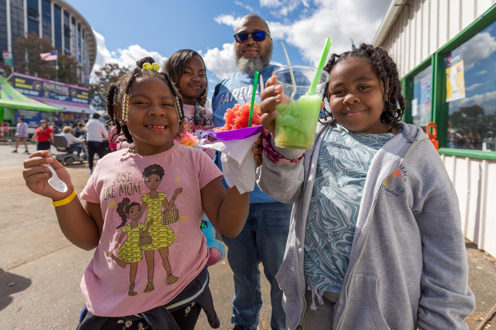
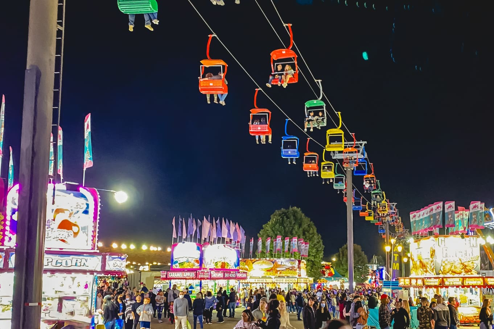

Event Overview

The N.C. State Fair is an annual celebration thats brings many communites together through agriculture, entertainment, food, and family activities. The 2026 N.C. State Fair will will take place from October 15th through October 25th at the N.C. State Fairgrounds in Raleigh. Visitors will have the chance to enjoy games, rides, animal exhibits, live entertainment, vendors, competitions, and a varity of unqiue vendor foods.
Featured Activities

- Ride Carnival Rides and see different attractions.
- Play Fair games and explore different booths.
- Watch Livestock and animal exhibits
- Explore the agricultural exhibits and competitions.
- Listen to the live musix and entertainment.
- Visiting different vendors and discovering North Carolina products.
- Trying unique fair foods and the many sweet treats.
Attendee Tips
- Check the Fair schedule before arriving.
- Wear comfortable shoes due to the extensive walking at the fairgrounds.
- Plan transportation before arriving (different locations throughout the fairgrounds).
- Arrive early to explore all of the activities at the Fairgrounds.
- Check admission information before entering.
Attendee Testimonial
"The N.C. State Fair has been such a great experience with my family. We have enjoyed all of the fun rides and unqiue foods that the fair has offered! This fair truly has brought in many communities throughout North Carolina and it is just beautiful."